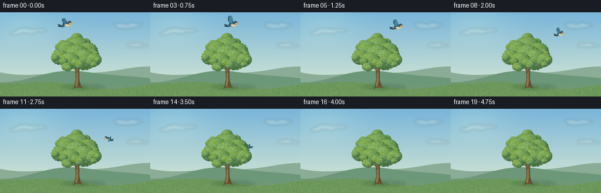
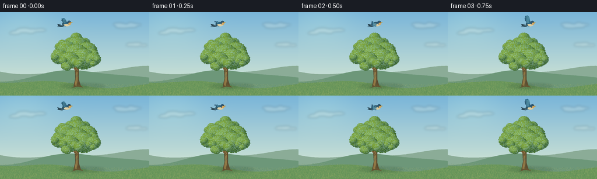

CODING AGENTS AS PIXEL WORLD MODELS
traex/GPT-6.1-Sol · dynamic_spatial_relationship_0047
点击播放 · 原生 RGB 像素
逐轮保存的候选
回放视频、检查图与代码变化。
每份候选均可单独播放。实际图片检查记录在下方工具轨迹中。
候选 01播放与检查图
点击播放 · 原生 RGB 像素


展开代码变化
--- 上一保存版本
+++ 本次保存版本
@@ -0,0 +1,165 @@
+from pathlib import Path
+import math
+import numpy as np
+from PIL import Image, ImageDraw, ImageFilter
+from artifact_io import save
+
+ROOT=Path(__file__).resolve().parent
+W,H,S=256,144,4
+rng=np.random.default_rng(472)
+
+def ellipse(d,box,fill):
+ d.ellipse(tuple(int(round(v*S)) for v in box),fill=fill)
+def line(d,pts,fill,width=1):
+ d.line([(round(x*S),round(y*S)) for x,y in pts],fill=fill,width=max(1,round(width*S)))
+def poly(d,pts,fill):
+ d.polygon([(round(x*S),round(y*S)) for x,y in pts],fill=fill)
+def bezier(p):
+ a,b,c,e=np.array(p,float)
+ t=np.linspace(0,1,22)[:,None]
+ return (1-t)**3*a+3*(1-t)**2*t*b+3*(1-t)*t*t*c+t**3*e
+
+def landscape():
+ yy,xx=np.mgrid[0:H*S,0:W*S]; y=yy/(H*S)
+ top=np.array([121,181,217]);bottom=np.array([223,236,211])
+ arr=top[None,None,:]*(1-y[:,:,None])+bottom[None,None,:]*y[:,:,None]
+ sun=np.exp(-(((xx/S-39)/58)**2+((yy/S-17)/40)**2))
+ arr+=sun[:,:,None]*np.array([15,12,3])
+ im=Image.fromarray(np.uint8(np.clip(arr,0,255))).convert('RGBA')
+ clouds=Image.new('RGBA',im.size);d=ImageDraw.Draw(clouds)
+ for cx,cy,scale in [(40,32,.8),(218,22,.7),(231,56,.5)]:
+ for j in range(14):
+ x=cx+rng.normal(0,16)*scale;y0=cy+rng.normal(0,2.3)*scale
+ rw=rng.uniform(7,19)*scale;rh=rng.uniform(2,4.5)*scale
+ ellipse(d,(x-rw,y0-rh,x+rw,y0+rh),(249,248,230,48))
+ im=Image.alpha_composite(im,clouds.filter(ImageFilter.GaussianBlur(2*S)))
+ d=ImageDraw.Draw(im)
+ for layer,col,base,amp in [(0,(139,172,151),101,6),(1,(109,151,121),110,9),(2,(105,150,91),124,5)]:
+ pts=[(x,base+amp*math.sin(x/52+layer*2)+2.5*math.sin(x/25+.7)) for x in range(-2,259,2)]
+ poly(d,pts+[(258,145),(-2,145)],col)
+ # A soft, sunlit meadow with finer distant texture.
+ meadow=Image.new('RGBA',im.size);d=ImageDraw.Draw(meadow)
+ for i in range(5200):
+ x=rng.uniform(0,256);y0=rng.uniform(112,145)
+ if y0<121+4*math.sin(x/52+4):continue
+ length=.25+(y0-111)/29*rng.uniform(.3,2.8)
+ c=[(145,169,88,105),(176,188,108,110),(61,116,62,110),(203,194,117,100)][rng.integers(4)]
+ line(d,[(x,y0),(x+rng.uniform(-.7,.7),y0-length)],c,.2)
+ im=Image.alpha_composite(im,meadow)
+ shadow=Image.new('RGBA',im.size);d=ImageDraw.Draw(shadow)
+ ellipse(d,(103,123,180,132),(36,73,49,45));ellipse(d,(120,124,150,132),(29, sixty:=60,38,65))
+ im=Image.alpha_composite(im,shadow.filter(ImageFilter.GaussianBlur(2*S)))
+ return im
+
+
+def tree():
+ im=Image.new('RGBA',(W*S,H*S));d=ImageDraw.Draw(im)
+ # Tapered trunk, roots, and structural branches.
+ poly(d,[(126,128),(129,114),(128,97),(125,83),(131,80),(135,98),(135,116),(139,129)],(93,76,47,255))
+ poly(d,[(126,129),(131,124),(134,124),(143,130),(133,128),(122,131)],(101,83,49,255))
+ poly(d,[(128,126),(130,112),(129.5,98),(128,86),(130,85),(133,101),(133,118),(131,127)],(147,119,68,255))
+ branches=[([(132,103),(124,91),(117,86),(109,76)],3.1), ([(131,97),(142,86),(154,80),(163,74)],3), ([(129,94),(130,79),(139,66)],2.5), ([(127,91),(114,89),(104,85)],2), ([(134,96),(149,91),(159,87)],1.7)]
+ for pts,w in branches:
+ for j in range(len(pts)-1):line(d,pts[j:j+2],(100,82,48,255),w*(1-j*.25))
+ line(d,[(x-.5,y-.3) for x,y in pts],(153,123,68,255),.55)
+ for i in range(20):
+ x=rng.uniform(129,134); y=rng.uniform(101,127)
+ line(d,[(x,y),(x+rng.uniform(-.7,.7),y+rng.uniform(1,5))],(74,62,39,110),.25)
+ # Rounded three-dimensional leafy masses, lit from the upper left.
+ clusters=[(114,65,18),(132,59,20),(149,67,18),(102,77,15),(119,83,17),(143,81,21),(160,81,13),(131,73,21)]
+ lobes=[]
+ for ci,(cx,cy,r) in enumerate(clusters):
+ lobes.append((cx,cy,r,ci))
+ for j in range(6):
+ a=rng.uniform(0,2*math.pi);rr=rng.uniform(.50,.77)*r
+ lobes.append((cx+math.cos(a)*rr,cy+math.sin(a)*rr,rng.uniform(.35,.51)*r,ci))
+ # Place lobes farther down and right in front; shadow crevices remain between them.
+ lobes.sort(key=lambda v:v[1]+v[0]*.06)
+ for cx,cy,r,ci in lobes:
+ box=(int((cx-r-1)*S),int((cy-r*.85-1)*S),int((cx+r+1)*S),int((cy+r*.85+1)*S))
+ w=box[2]-box[0];h=box[3]-box[1]
+ y,x=np.mgrid[0:h,0:w]
+ nx=(x+box[0]-cx*S)/(r*S);ny=(y+box[1]-cy*S)/(r*.85*S)
+ # Very small contour ripples break perfect circles into natural leafy edges.
+ angle=np.arctan2(ny,nx)
+ lim=1+.026*np.sin(angle*17+ci)+.021*np.sin(angle*27+cx)
+ rad=nx*nx+ny*ny
+ mask=rad<lim*lim
+ nz=np.sqrt(np.maximum(0,1-rad))
+ light=np.clip(-.46*nx-.55*ny+.67*nz,0,1)
+ shade=.35+.65*light
+ dark=np.array([32,78,39]);bright=np.array([132,170, sixty:=62])
+ col=dark[None,None,:]+shade[:,:,None]*(bright-dark)[None,None,:]
+ noise=rng.normal(0,2,(h,w,1));col+=noise
+ data=np.zeros((h,w,4),np.uint8);data[:,:,:3]=np.uint8(np.clip(col,0,255));data[:,:,3]=mask*255
+ im.alpha_composite(Image.fromarray(data),(box[0],box[1]))
+ d=ImageDraw.Draw(im)
+ # Fine individual leaflets, coherent with the light on the lobe.
+ for j in range(int(r*r*2.6)):
+ ax=rng.uniform(-1,1);ay=rng.uniform(-1,1)
+ if ax*ax+ay*ay>.93:continue
+ px=cx+ax*r;py=cy+ay*r*.85
+ lum=max(0,-.46*ax-.55*ay+.67*math.sqrt(max(0,1-ax*ax-ay*ay)))
+ color=np.array([33,78,34])+lum*np.array([90,95,35])+rng.normal(0,10)
+ color=np.clip(color,0,255).astype(int)
+ rw=rng.uniform(.35,.9);rh=rng.uniform(.19,.43)
+ ellipse(d,(px-rw,py-rh,px+rw,py+rh),tuple(color)+(rng.integers(115,225).item(),))
+ return im
+
+
+def bird(x,y,scale,heading,phase):
+ im=Image.new('RGBA',(W*S,H*S));d=ImageDraw.Draw(im)
+ # Side view with an animated, feathered pair of wings; the body turns continuously.
+ flip=heading
+ def trans(pts):return [(x+scale*flip*a,y+scale*b) for a,b in pts]
+ def P(pts,c):poly(d,trans(pts),c)
+ def C(points,c):P(bezier(points).tolist(),c)
+ def E(box,c):
+ x1,y1,x2,y2=box
+ p=trans([(x1,y1),(x2,y2)])
+ ellipse(d,(min(p[0][0],p[1][0]),min(p[0][1],p[1][1]),max(p[0][0],p[1][0]),max(p[0][1],p[1][1])),c)
+ flap=math.sin(phase)
+ tipy=-3-11*flap
+ # Far wing is smaller and paler.
+ P([(-2,-1),(-7,-5),(-8,tipy*.76),(-1,tipy*.60),(3,-2)],(54, ninety:=90,115,255))
+ P([(-6,2),(-14,0),(-12,3),(-14,4),(-6,5),(0,2)],(37,63,75,255))
+ P([(-11,2),(-5,3),(-2,2),(-6,4)],(97,139,155,255))
+ E((-6,-3,6,4),(44,83,101,255))
+ E((-3,-.3,6,4),(218,204,163,255))
+ E((2,-5,8,1.2),(44,85,111,255))
+ E((4,-2,8,1.6),(213,168,99,255))
+ P([(7,-3),(11,-1.8),(7.5,-.6)],(194,153,67,255))
+ E((5.8,-3.7,7.05,-2.3),(16,24,29,255))
+ E((6.03,-3.58,6.40,-3.24),(245,249,233,255))
+ # A sweeping near wing with separately resolved primary feathers.
+ pts=[(-3,0),(-6,-4),(-7,tipy),(-3,tipy-1),(0,tipy+2),(1,-3),(2,0)]
+ P(pts,(46,105,133,255))
+ P([(-3,-1),(-5,-4),(-5,tipy+.5),(-2,tipy+.7),(0,tipy+2),(-.5,-2)],(87,150,173,255))
+ for k in range(5):
+ a=(-6.7+k*1.38,tipy+.5+k*.3)
+ b=(-5+k*1.15,-2)
+ line(d,trans([a,b]),(27,66,86,255),.35*scale)
+ line(d,trans([(-4,1),(-1,2),(2,2)]),(237,221,180,255),.5*scale)
+ return im
+
+
+def main():
+ base=landscape();foliage=tree()
+ # A wide rightward arc curves away from the viewer, then behind the opaque crown.
+ keys=np.array([[0,113,20,1.08,1],[3,140,20,1.04,1],[6,174,26,.98,1],[9,190,40,.90,.75],[11,184,51,.84,-.8],[13,169, sixty:=62,.77,-1],[16,151,68,.72,-1],[19,138,69,.70,-1]],float)
+ frames=[]
+ for i in range(20):
+ k=min(np.searchsorted(keys[:,0],i,side='right')-1,len(keys)-2)
+ a,b=keys[k],keys[k+1];t=(i-a[0])/(b[0]-a[0]);t=t*t*(3-2*t)
+ values=a[1:]*(1-t)+b[1:]*t
+ x,y,sc,heading=values
+ wingphase=2*math.pi*(i/4*1.65)+.5
+ animal=bird(x,y,sc,heading,wingphase)
+ im=base.copy()
+ # The physical tree obscures the bird on its far-side pass. No fading is used.
+ im=Image.alpha_composite(im,animal)
+ im=Image.alpha_composite(im,foliage)
+ frames.append(np.asarray(im.convert('RGB').resize((W,H),Image.Resampling.LANCZOS)))
+ save(np.stack(frames).astype(np.uint8),ROOT)
+
+if __name__=='__main__':main()
可观测工具轨迹
实际执行的命令与返回图片。
命令 1exit 0
/bin/bash -lc 'ls -la && cat prompt.txt && cat GENERATION_RULES.md && cat task_spec.json'
命令 2exit 0
/bin/bash -lc 'cat artifact_io.py'
命令 3exit 0
/bin/bash -lc "cat > generate.py <<'PY'
from pathlib import Path
import math
import numpy as np
from PIL import Image, ImageDraw, ImageFilter
from artifact_io import save
ROOT=Path(__file__).resolve().parent
W,H,S=256,144,4
rng=np.random.default_rng(472)
def ellipse(d,box,fill):
d.ellipse(tuple(int(round(v*S)) for v in box),fill=fill)
def line(d,pts,fill,width=1):
d.line([(round(x*S),round(y*S)) for x,y in pts],fill=fill,width=max(1,round(width*S)))
def poly(d,pts,fill):
d.polygon([(round(x*S),round(y*S)) for x,y in pts],fill=fill)
def bezier(p):
a,b,c,e=np.array(p,float)
t=np.linspace(0,1,22)[:,None]
return (1-t)**3*a+3*(1-t)**2*t*b+3*(1-t)*t*t*c+t**3*e
def landscape():
yy,xx=np.mgrid[0:H*S,0:W*S]; y=yy/(H*S)
top=np.array([121,181,217]);bottom=np.array([223,236,211])
arr=top[None,None,:]*(1-y[:,:,None])+bottom[None,None,:]*y[:,:,None]
sun=np.exp(-(((xx/S-39)/58)**2+((yy/S-17)/40)**2))
arr+=sun[:,:,None]*np.array([15,12,3])
im=Image.fromarray(np.uint8(np.clip(arr,0,255))).convert('RGBA')
clouds=Image.new('RGBA',im.size);d=ImageDraw.Draw(clouds)
for cx,cy,scale in [(40,32,.8),(218,22,.7),(231,56,.5)]:
for j in range(14):
x=cx+rng.normal(0,16)*scale;y0=cy+rng.normal(0,2.3)*scale
rw=rng.uniform(7,19)*scale;rh=rng.uniform(2,4.5)*scale
ellipse(d,(x-rw,y0-rh,x+rw,y0+rh),(249,248,230,48))
im=Image.alpha_composite(im,clouds.filter(ImageFilter.GaussianBlur(2*S)))
d=ImageDraw.Draw(im)
for layer,col,base,amp in [(0,(139,172,151),101,6),(1,(109,151,121),110,9),(2,(105,150,91),124,5)]:
pts=[(x,base+amp*math.sin(x/52+layer*2)+2.5*math.sin(x/25+.7)) for x in range(-2,259,2)]
poly(d,pts+[(258,145),(-2,145)],col)
# A soft, sunlit meadow with finer distant texture.
meadow=Image.new('RGBA',im.size);d=ImageDraw.Draw(meadow)
for i in range(5200):
x=rng.uniform(0,256);y0=rng.uniform(112,145)
if y0<121+4*math.sin(x/52+4):continue
length=.25+(y0-111)/29*rng.uniform(.3,2.8)
c=[(145,169,88,105),(176,188,108,110),(61,116,62,110),(203,194,117,100)][rng.integers(4)]
line(d,[(x,y0),(x+rng.uniform(-.7,.7),y0-length)],c,.2)
im=Image.alpha_composite(im,meadow)
shadow=Image.new('RGBA',im.size);d=ImageDraw.Draw(shadow)
ellipse(d,(103,123,180,132),(36,73,49,45));ellipse(d,(120,124,150,132),(29, sixty:=60,38,65))
im=Image.alpha_composite(im,shadow.filter(ImageFilter.GaussianBlur(2*S)))
return im
def tree():
im=Image.new('RGBA',(W*S,H*S));d=ImageDraw.Draw(im)
# Tapered trunk, roots, and structural branches.
poly(d,[(126,128),(129,114),(128,97),(125,83),(131,80),(135,98),(135,116),(139,129)],(93,76,47,255))
poly(d,[(126,129),(131,124),(134,124),(143,130),(133,128),(122,131)],(101,83,49,255))
poly(d,[(128,126),(130,112),(129.5,98),(128,86),(130,85),(133,101),(133,118),(131,127)],(147,119,68,255))
branches=[([(132,103),(124,91),(117,86),(109,76)],3.1), ([(131,97),(142,86),(154,80),(163,74)],3), ([(129,94),(130,79),(139,66)],2.5), ([(127,91),(114,89),(104,85)],2), ([(134,96),(149,91),(159,87)],1.7)]
for pts,w in branches:
for j in range(len(pts)-1):line(d,pts[j:j+2],(100,82,48,255),w*(1-j*.25))
line(d,[(x-.5,y-.3) for x,y in pts],(153,123,68,255),.55)
for i in range(20):
x=rng.uniform(129,134); y=rng.uniform(101,127)
line(d,[(x,y),(x+rng.uniform(-.7,.7),y+rng.uniform(1,5))],(74,62,39,110),.25)
# Rounded three-dimensional leafy masses, lit from the upper left.
clusters=[(114,65,18),(132,59,20),(149,67,18),(102,77,15),(119,83,17),(143,81,21),(160,81,13),(131,73,21)]
lobes=[]
for ci,(cx,cy,r) in enumerate(clusters):
lobes.append((cx,cy,r,ci))
for j in range(6):
a=rng.uniform(0,2*math.pi);rr=rng.uniform(.50,.77)*r
lobes.append((cx+math.cos(a)*rr,cy+math.sin(a)*rr,rng.uniform(.35,.51)*r,ci))
# Place lobes farther down and right in front; shadow crevices remain between them.
lobes.sort(key=lambda v:v[1]+v[0]*.06)
for cx,cy,r,ci in lobes:
box=(int((cx-r-1)*S),int((cy-r*.85-1)*S),int((cx+r+1)*S),int((cy+r*.85+1)*S))
w=box[2]-box[0];h=box[3]-box[1]
y,x=np.mgrid[0:h,0:w]
nx=(x+box[0]-cx*S)/(r*S);ny=(y+box[1]-cy*S)/(r*.85*S)
# Very small contour ripples break perfect circles into natural leafy edges.
angle=np.arctan2(ny,nx)
lim=1+.026*np.sin(angle*17+ci)+.021*np.sin(angle*27+cx)
rad=nx*nx+ny*ny
mask=rad<lim*lim
nz=np.sqrt(np.maximum(0,1-rad))
light=np.clip(-.46*nx-.55*ny+.67*nz,0,1)
shade=.35+.65*light
dark=np.array([32,78,39]);bright=np.array([132,170, sixty:=62])
col=dark[None,None,:]+shade[:,:,None]*(bright-dark)[None,None,:]
noise=rng.normal(0,2,(h,w,1));col+=noise
data=np.zeros((h,w,4),np.uint8);data[:,:,:3]=np.uint8(np.clip(col,0,255));data[:,:,3]=mask*255
im.alpha_composite(Image.fromarray(data),(box[0],box[1]))
d=ImageDraw.Draw(im)
# Fine individual leaflets, coherent with the light on the lobe.
for j in range(int(r*r*2.6)):
ax=rng.uniform(-1,1);ay=rng.uniform(-1,1)
if ax*ax+ay*ay>.93:continue
px=cx+ax*r;py=cy+ay*r*.85
lum=max(0,-.46*ax-.55*ay+.67*math.sqrt(max(0,1-ax*ax-ay*ay)))
color=np.array([33,78,34])+lum*np.array([90,95,35])+rng.normal(0,10)
color=np.clip(color,0,255).astype(int)
rw=rng.uniform(.35,.9);rh=rng.uniform(.19,.43)
ellipse(d,(px-rw,py-rh,px+rw,py+rh),tuple(color)+(rng.integers(115,225).item(),))
return im
def bird(x,y,scale,heading,phase):
im=Image.new('RGBA',(W*S,H*S));d=ImageDraw.Draw(im)
# Side view with an animated, feathered pair of wings; the body turns continuously.
flip=heading
def trans(pts):return [(x+scale*flip*a,y+scale*b) for a,b in pts]
def P(pts,c):poly(d,trans(pts),c)
def C(points,c):P(bezier(points).tolist(),c)
def E(box,c):
x1,y1,x2,y2=box
p=trans([(x1,y1),(x2,y2)])
ellipse(d,(min(p[0][0],p[1][0]),min(p[0][1],p[1][1]),max(p[0][0],p[1][0]),max(p[0][1],p[1][1])),c)
flap=math.sin(phase)
tipy=-3-11*flap
# Far wing is smaller and paler.
P([(-2,-1),(-7,-5),(-8,tipy*.76),(-1,tipy*.60),(3,-2)],(54, ninety:=90,115,255))
P([(-6,2),(-14,0),(-12,3),(-14,4),(-6,5),(0,2)],(37,63,75,255))
P([(-11,2),(-5,3),(-2,2),(-6,4)],(97,139,155,255))
E((-6,-3,6,4),(44,83,101,255))
E((-3,-.3,6,4),(218,204,163,255))
E((2,-5,8,1.2),(44,85,111,255))
E((4,-2,8,1.6),(213,168,99,255))
P([(7,-3),(11,-1.8),(7.5,-.6)],(194,153,67,255))
E((5.8,-3.7,7.05,-2.3),(16,24,29,255))
E((6.03,-3.58,6.40,-3.24),(245,249,233,255))
# A sweeping near wing with separately resolved primary feathers.
pts=[(-3,0),(-6,-4),(-7,tipy),(-3,tipy-1),(0,tipy+2),(1,-3),(2,0)]
P(pts,(46,105,133,255))
P([(-3,-1),(-5,-4),(-5,tipy+.5),(-2,tipy+.7),(0,tipy+2),(-.5,-2)],(87,150,173,255))
for k in range(5):
a=(-6.7+k*1.38,tipy+.5+k*.3)
b=(-5+k*1.15,-2)
line(d,trans([a,b]),(27,66,86,255),.35*scale)
line(d,trans([(-4,1),(-1,2),(2,2)]),(237,221,180,255),.5*scale)
return im
def main():
base=landscape();foliage=tree()
# A wide rightward arc curves away from the viewer, then behind the opaque crown.
keys=np.array([[0,113,20,1.08,1],[3,140,20,1.04,1],[6,174,26,.98,1],[9,190,40,.90,.75],[11,184,51,.84,-.8],[13,169, sixty:=62,.77,-1],[16,151,68,.72,-1],[19,138,69,.70,-1]],float)
frames=[]
for i in range(20):
k=min(np.searchsorted(keys[:,0],i,side='right')-1,len(keys)-2)
a,b=keys[k],keys[k+1];t=(i-a[0])/(b[0]-a[0]);t=t*t*(3-2*t)
values=a[1:]*(1-t)+b[1:]*t
x,y,sc,heading=values
wingphase=2*math.pi*(i/4*1.65)+.5
animal=bird(x,y,sc,heading,wingphase)
im=base.copy()
# The physical tree obscures the bird on its far-side pass. No fading is used.
im=Image.alpha_composite(im,animal)
im=Image.alpha_composite(im,foliage)
frames.append(np.asarray(im.convert('RGB').resize((W,H),Image.Resampling.LANCZOS)))
save(np.stack(frames).astype(np.uint8),ROOT)
if __name__=='__main__':main()
PY
python generate.py"命令 4exit 0
/bin/bash -lc "python - <<'PY'
from pathlib import Path
import numpy as np
from PIL import Image
p=Path('.')
a=np.load('pixels.npz')['pixels']
print('Packed RGB tensor:', a.shape)
print('Frames:',len(list((p/'frames').glob('*.png'))))
print('Frame size:',Image.open('frames/00.png').size)
print('Artifacts:', ', '.join(x for x in ['generate.py','pixels.npz','index.html','inspection.png'] if (p/x).exists()))
PY"视觉工具实际返回图片 1

保存候选 1 份；完成命令 4 次；可验证图片返回 1 张。原始 API 响应与完整日志保留在本地。